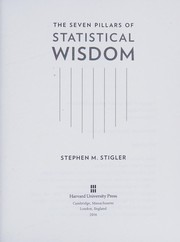

The Seven Pillars of Statistical Wisdom
Book·Stephen Stigler, 2016·统计学七支柱

A history of statistical thought, including Galton's work on regression and correlation. It is background reading for understanding measurement and research on differences.
- Author
- Stephen Stigler
- Year
- 2016
- Difficulty
- Intermediate
- Kind
- Overview
- Schools
- Individual Differences
- Core theories
- Correlation and Regression
Editions
- Chinese edition 《统计学七支柱》 [美] 史蒂芬·斯蒂格勒 · tr. 高蓉 / 李茂 · 人民邮电出版社 · 2018 Douban 6.4 (179 ratings) Douban page ↗
- English edition The Seven Pillars of Statistical Wisdom Stephen M. Stigler · Harvard University Press, first edition · 2016 Open Library ↗